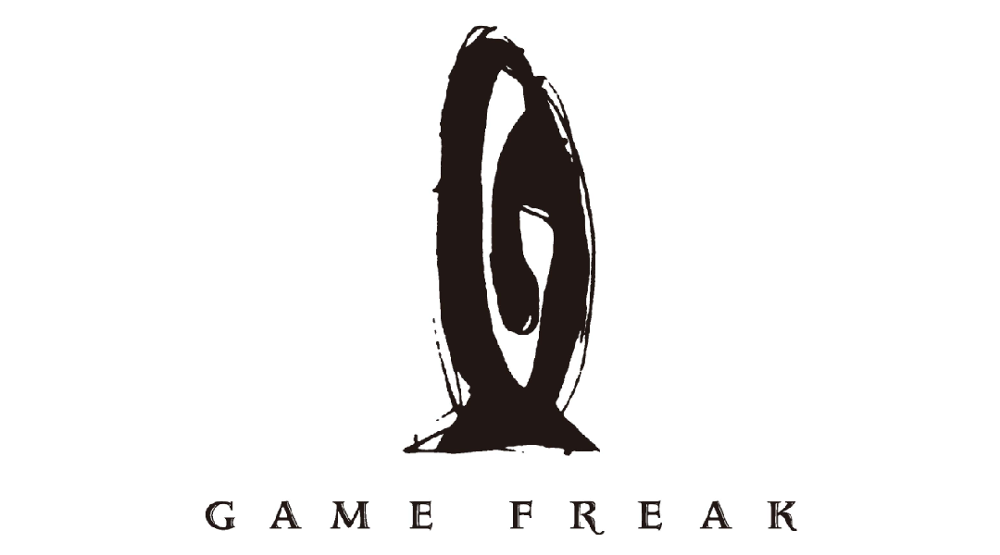

気になる企業
株式会社ゲームフリーク (サイトはこちら)
企業理念
良質な「遊び」を
継続的に作り出すことによって
世界中の人に
楽しさ、面白さ、発見を。
そして
勇気と希望、やさしさ、夢、冒険心
を提供していきます。
私が気になっている・受験しようと考えている企業は「株式会社ゲームフリーク」です。
私は子供の頃からゲームが好きで将来はゲームを作る職業に就きたいと思っていました。ゲームの中でも特に「ポケットモンスターシリーズ」は一番好きでかなり長い時間プレイしました。
さらに、ゲームフリークさんの企業理念や、「楽しいゲームは、楽しく働ける環境から」というモットーに惹かれ、株式会社ゲームフリークを第一志望として考えています。
採用の面でも、ゲーム作成の経験がある人には自分の技術力をアピールする選考があり、またゲーム作成の経験やプログラミングの経験があまりない人でもプログラミングなどと関係のないいままでの成果物などをアピールしたり、作文を書く選考方法もあり、様々な分野の人材を獲得しようとしている・様々な分野の人間にチャンスがある、というところがとてもいいなと思いました。